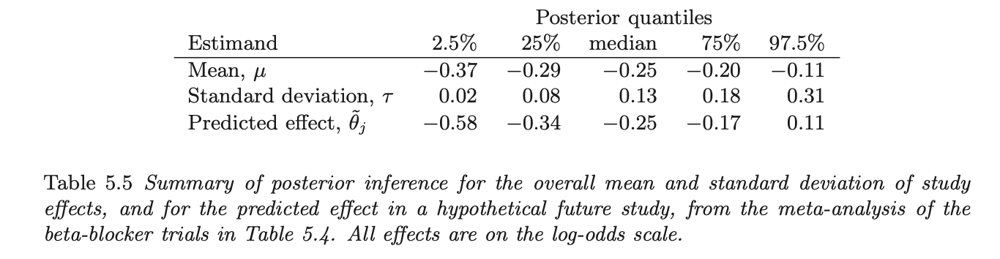

0118CH5 階層模型
階層模式（Hierarchical Models）
- 本章介紹如何把多個類似的實驗（或工廠、SEG）結合起來分析，這運用「借用力量（Borrowing Strength） 」。
1.1 為什麼需要Hierarchical Model？
在傳統統計或簡單的貝氏分析中，我們通常只關注單一參數。但在現實世界，很多數據是有結構的。許多統計應用涉及多個參數，這些參數在問題結構上是相關聯的。
例：研究多個醫院的心臟病治療效果，我們預期這些醫院的參數（存活率 \theta_j）應該彼此相關，因為它們都是「醫院」這個母體的一份子。
1.2 OHS觀點
- 如果你要評估一家大型石化公司的 「苯暴露風險」，該公司有 10 個不同的廠區（Plant A, Plant B…）。貝氏思維如下：
完全獨立（No Pooling）：如果你認為每個廠區完全無關，只用該廠區的 3 個樣本來評估，誤差會非常大（不確定性太高）。
完全合併（Complete Pooling）：如果你認為每個廠區都一模一樣，把所有廠區的數據混在一起算一個平均值，你會忽略各廠區製程老舊程度、通風設備的差異（掩蓋了真實風險）。
階層模式（Partial Pooling）：這是中庸之道。我們假設這些廠區的風險參數 \theta_j 是來自同一個「母體分佈」。我們允許各廠區有差異，但利用整體數據來修正個別廠區的估計。
1.3 運作原理
母體分佈：我們假設個別單元（如各廠區）的參數 \theta_j，是從一個共同的母體分佈抽樣出來的。
超參數（Hyperparameters）：這個母體分佈本身的參數（例如母體的平均值與變異數），我們稱為「超參數」。
優勢：階層模式可以容納足夠多的參數來擬合數據，同時透過母體分佈來約束參數，避免「過度擬合（Overfitting）」。這對於數據稀缺的職業衛生評估至關重要。
- 當我們手邊有「歷史數據」時，如何利用它們來為當前的ＳＥＧ暴露實態建立一個合理的 事前分佈。（參數化）
1. 分析單一暴露並參考歷史數據
- 情境：我們要估計一個小實驗的參數 \theta，利用類似的過去實驗（歷史數據）來建構事前分佈。我們假設：將「當前實驗」與「歷史實驗」視為來自同一母體的隨機樣本。
ＯＨＳ例：噪音作業的聽力損失率
假設我們想評估 「當前」 某個新建沖壓工廠工人的聽力損失風險 \theta_{71}（假設編號第 71 號）。
現況數據：我們剛檢查了 14 位工人，發現 4 位有聽力異常（4/14）。
歷史數據：我們手邊有過去 70 個類似工廠的聽力檢查紀錄。
如果只看當前數據，異常率是 4/14 = 28.6\%。但這個樣本太小，誤差很大。如果過去 70 個工廠的平均異常率只有 10%，我們是否該懷疑這 28.6% 只是運氣不好（抽樣誤差）？
2. 利用歷史數據估計母體分佈（近似法）
模型設定：
假設每個工廠的異常人數 y_j 服從二項式分佈（Binomial）。
每個工廠的風險機率 \theta_j 服從 Beta 分佈（這是二項式的共軛事前分佈）。
Beta 分佈有兩個參數 (\alpha, \beta)，這就是超參數。
簡單估計法（非完全貝氏）：
計算過去 70 個工廠的平均異常率和標準差。
假設數據：平均值 0.136，標準差 0.103。
利用公式反推 Beta 分佈的 \alpha 和 \beta。原文算出 (\alpha, \beta) = (1.4, 8.6) ，這代表「所有類似工廠」的風險分佈大概長這樣。(可參考BDA3 Appendix A 公式 ，Beta 分佈的平均值與變異數公式，使用動差法反推)
應用於當前ＥＡ：
將算出來的歷史分佈 Beta(1.4, 8.6) 當作 事前分佈。
結合當前數據（4 人異常，10 人正常）。
事後分佈：Beta(1.4+4, 8.6+10) = Beta(5.4, 18.6) 。
結果：新的估計值（事後平均）是 0.223。
比較：
原始數據直接算：0.286 (28.6%)
加入歷史經驗修正後：0.223 (22.3%)
我們的解讀：因為歷史經驗告訴我們異常率通常較低，所以貝氏方法把那個偏高的 28.6% 往下拉了一點（Shrinkage，這就是平滑化或修正的效果）。
3. 「簡單估計法」的問題
問題一：雙重計算（Double Counting）：如果我們把那 70 個歷史工廠的數據拿來算出 \alpha, \beta，然後又回頭用這個 \alpha, \beta 去評估這 70 個工廠中的某一個，這樣數據被用了兩次，會高估精確度。
問題二：忽略了不確定性：我們直接把 (\alpha, \beta) 鎖定為 (1.4, 8.6)，當作這就是真理。但實際上這兩個數字也是估計出來的，也有誤差。直接鎖定會讓我們低估了最終結果的不確定性。
問題三：事前分佈應該是「看數據之前」就有的，怎麼會是看完數據後才算出來的？
這些近似法的問題（缺點），顯示為什麼我們後面需要更進階的階層模式。
4. 資訊結合的邏輯
為什麼我們要把它們視為一個整體（Joint Distribution）？
假設有兩個工廠（工廠 26 和工廠 27），它們的數據一模一樣（例如都是 20 人中有 2 人異常）。
連結性：如果你後來得知工廠 26 的真實風險其實很低（例如 \theta_{26}=0.1），這會不會影響你對工廠 27 的看法？
答案：會！ 因為這暗示了這些工廠所屬的「母體環境」可能風險都偏低。既然工廠 26 和 27 很像，26 很低，27 應該也不高。
結論：這兩個參數在事後分佈中應該是 相依的 (Dependent)，不能分開獨立分析。這就是階層貝氏模式的核心精神。
小結
學會用「歷史數據」來建立「事前分佈」。
保留舊資料：過去的暴露監測數據，是評估新製程或新工廠極為寶貴的資產。
修正小樣本偏差：當新採樣數不足時，利用歷史分佈（階層架構）可以避免我們被極端值誤導。
注意限制：近似法的「先算出固定超參數」的方法只是近似解，它可能低估了風險的不確定性。
接下來：考慮「超參數不確定性」，我們必須將 \alpha, \beta 也視為隨機變數來處理。
可交換性 (Exchangeability)」 是貝氏階層模式的核心基礎，也是我們在職業衛生現場決定「能不能把這群人的數據合在一起分析？」的關鍵判斷標準。
身為一名職業衛生專家，你測了 A 廠區的苯濃度，能不能拿來預測 B 廠區？或者，把 A、B、C 三個廠區的數據全部混在一起算個總平均合不合理？這就是 「可交換性」 在探討的問題。
1. 「可交換性」？
在統計學上，如果你對一組參數 \theta_1, \dots, \theta_J（例如 10 個不同工廠的平均暴露濃度）沒有任何額外的資訊可以用來區分它們，那麼這些參數對你來說就是「對稱」的。
定義：如果我們把這些參數的編號（標籤）隨意互換（Permutation），你的機率模型（Joint Probability Distribution）都不會改變，那我們就稱這些參數是 「可交換的」。
- 簡單說：在還沒看到數據之前，我們「無法區分」工廠 A 和工廠 B 誰的風險比較高。既然分不出來，就假設它們來自同一個「超級母體 (Superpopulation)」，擁有共同的特性。
ＯＨＳ例：
假設你有 5 個焊接工人（Worker A, B, C, D, E）。
可交換性：如果你只知道他們都是「焊接工」，沒有其他資訊，那你應該假設他們的暴露風險分佈是可交換的。你不會預設立場覺得 Worker A 一定比 Worker B 吸入更多燻煙。
不可交換：如果你知道 Worker A 是在「通風良好的戶外」工作，而 Worker B 是在「密閉狹窄空間」工作，這時候他們就 「不可交換」 了。因為你有額外資訊（通風條件）來區別他們。當然ＲＰＥ使用也是。
2. 無知是可交換 (Ignorance implies exchangeability)
課本名言：「通常，我們知道得越少，就越能自信地宣稱可交換性。」。如果你對這些工廠一無所知，你唯一的選擇就是把它們視為相似的群體來建模。
骰子比喻：給你一顆骰子，你還沒擲之前，你會假設 6 個面出現的機率是一樣的（對稱、可交換）。但如果你仔細測量發現骰子重心偏向某一邊（有了額外資訊），這種對稱性就被打破了。亦即，有額外資訊，便打破可交換性。
4. 條件可交換性 —實務上
現實中，我們很少真的「一無所知」。我們通常知道工廠的大小、製程、通風設備等。如果有了這些資訊，還能用階層模式嗎？當然可以！這就是 「條件可交換性」。
作法：我們把已知的差異（如：通風好壞、製程種類）當作 共變數 (Covariates, x_i) 放進模型裡。
公式概念： p(\theta_1, \dots, \theta_J | x_1, \dots, x_J)
- 雖然 \theta（暴露風險）本身不可交換，但在「考慮了通風條件 x」之後，剩下的殘差或不確定性是可交換的。
5. OHS應用：SEG (相似暴露群) 的劃分
劃分 SEG (Similar Exposure Group) 的理論基礎：
我們為什麼要把工人分組？就是要讓組內的工人 「在統計上是可交換的」。
如果一組裡面混了「操作員」和「維修員」，他們的暴露型態不同，就違反了可交換性。
解決方法：分層（Hierarchical）或分組。把操作員設為一組，維修員設為一組。在每一組內部，我們假設工人是可交換的，然後針對每一組建立各自的階層模型。
6. 對可交換性模型的反對意見
很多人會批評：「每個工廠、每個工人都是獨一無二的，你怎麼可以假設他們來自同一個分佈（可交換）？」。
回應：是的，參數 \theta_j 確實各不相同（就像每個人身高不同）。但 「可交換」並不是假設參數數值相同，而是假設它們背後的「產生機制」是相似的。
除非你有具體的證據（數據或知識）能區分它們，否則「可交換性」是處理不確定性最合邏輯的假設。這就跟做回歸分析一樣，你也是假設殘差符合某個共同分佈。
7. 事後預測分佈 (Posterior Predictive Distributions)
- 在階層模式中，我們有兩層參數：
個別參數 \theta_j（例如：某個特定工廠 A 的平均暴露濃度）。
超參數 \phi（例如：全公司所有工廠的整體分佈特性）。
- 基於此，有兩種我們可能有興趣的預測情境 ：
情境一：預測工廠Ａ的未來
目標：預測未來的數據 \tilde{y}，基於現有的參數 \theta_j。
作法：直接使用我們已經算出來的該工廠事後參數 \theta_j，去模擬新的數據。
ＯＨＳ例：
你是某化工廠的職安衛人員，你已經對「維修組 (SEG A)」進行了多次苯暴露採樣，算出他們的平均風險 \theta_{A}。
問題：下週維修組要進行大修，我想預測他們下週的採樣數據 \tilde{y} 可能會分佈在哪裡？會不會超過容許濃度 (PEL)？
應用：這是用來監控既有製程是否維持在受控狀態，因為我們已經有這個組的資料，所以預測會比較精準（不確定性較小）。
情境二：預測新工廠或新 SEG的狀況
定義：這是一個全新的單元（如新工廠或新的 SEG），我們完全沒有它的數據，但它屬於同一個母體（Superpopulation）。
目標：預測一個新的參數 \tilde{\theta}，以及其對應的數據 \tilde{y} 。
作法（兩步走）：
先根據超參數 \phi（母體分佈），抽出一個新的參數 \tilde{\theta}（模擬這個新工廠可能的平均風險）。
再根據這個 \tilde{\theta}，模擬出具體的測量數據 \tilde{y}。
ＯＨＳ例：
公司蓋了一座「新廠房」，製程跟舊廠房（歷史數據）很像，但還沒開始運轉，也還沒採樣。
問題：環安衛經理問你：「根據舊廠的經驗，你預估這個新廠未來的暴露濃度大概是多少？需不需要預先加裝更強的通風設備？」
應用：這就是推估未採樣區域的風險。
關鍵差異：這裡的不確定性會比情境一大很多！因為我們連這個新廠是「優等生」還是「劣等生」都不知道，所以必須把「母體的變異（工廠間的差異）」全部考慮進去。
概念比較
1. 情境一：針對「既有」工廠 (Existing Experiment)
流程：拿現有的 \theta_j (已知) \rightarrow 預測 \tilde{y} (未來數據)
2. 情境二：針對「全新」工廠 (New Experiment)
流程：拿 \phi (母體經驗) \rightarrow 預測 \tilde{\theta} (新廠體質) \rightarrow 預測 \tilde{y} (新廠數據)
在職業衛生暴露評估報告中，區分這兩者非常重要：
合規性判斷 (Compliance Testing)：通常是用情境一。我們想知道「這群已經在工作的勞工」，明天會不會超標。
風險管理與設計 (Risk Management & Design)：通常是用情境二。當我們在規劃新產線，或者面對一個還沒預算去採樣的SEG時，我們利用階層模式的「母體分佈」來大膽假設它的風險範圍。
「事後預測分佈 (Posterior Predictive Distributions)」 是我們做決策、寫評估報告時最有用的產出。簡單來說，我們辛苦建立模型、算出參數，最終目的通常不是為了看參數本身，而是為了回答老闆或勞檢員的問題：「明天這名勞工的暴露會不會超標？」 或者 「那個還沒採樣的新廠區，風險大概是多少？」
這就是「預測」的功能。在階層模式中，預測分為兩種截然不同的情境。
小結
判斷合併的標準：當你想把不同來源的採樣數據（不同廠區、不同班別）放在一起分析時，請先問：「這些來源是可交換的嗎？」
如果是（無區別資訊），大膽使用階層模式，借用數據力量。
如果不是（有明顯差異），請將差異因子（如區域、製程）納入模型（用回歸或分組），做成 「條件可交換」 的階層模型。
小樣本的救星：可交換性允許我們假設所有工廠都來自同一個「超級母體」。這讓我們在評估某個樣本數極少（n=3）的工廠時，可以合理地「參考」其他工廠的數據，避免因運氣不好而做出極端錯誤的風險判斷。
下一步：如何透過 貝氏定理 來計算那個共同的「超級母體」參數（也就是超參數）。
(Bayesian analysis of conjugate hierarchical models)
- 我們對母體長相也不完全確定，所以我們要給母體參數（超參數）也建立一個機率分佈。
第一階段：解析推導
1. 拆解聯合機率分佈
我們的目標是求出 聯合事後分佈 p(\theta, \phi | y)。其中：
\theta = (\theta_1, ..., \theta_J) 是各工廠的風險率。
\phi = (\alpha, \beta) 是超參數（母體特性）。
y 是數據。
公式拆解如下： p(\theta, \phi | y) \propto \underbrace{p(\phi)}_{\text{超事前分佈}} \times \underbrace{p(\theta|\phi)}_{\text{母體分佈}} \times \underbrace{p(y|\theta)}_{\text{概似函數}}
2. 「超參數」的邊際分佈
先不管個別工廠 \theta，只看數據 y 告訴我們關於母體 \phi 的什麼資訊。
課本使用了一個條件機率公式的變形來求 p(\phi | y) ：
- p(\phi | y) = \frac{p(\theta, \phi | y)}{p(\theta | \phi, y)}
分子：是我們上面列出的聯合分佈。
分母：是假設 \phi 已知的情況下，\theta 的事後分佈（這在共軛模式下很容易算，就是 Beta 分佈）。
個等式對 任何 \theta 值都成立。所以我們不需要做複雜的積分，只要把分子分母代入消去，就能得到只剩下 \phi 的函數。
3. 找出條件事後分佈
- 一旦我們搞定了 \phi（母體），個別工廠 \theta 的分佈 p(\theta | \phi, y) 就很簡單了。因為在共軛模式下（Beta-Binomial），只要 \alpha, \beta 固定，\theta_j 就是獨立的 Beta 分佈。
第二階段：電腦模擬抽樣
- 數學推導完後，我們得到了一個關於超參數 \phi 的複雜函數（通常長得不規則）。我們怎麼從中抽樣呢？課本介紹了 Grid Method（網格法），這在參數很少（只有 \alpha, \beta 兩個）時非常有效。
步驟 1：抽取超參數 \phi
建立網格：因為我們不知道 \alpha, \beta 是多少，我們在可能的範圍內撒下一張大網，例如在 \log(\alpha/\beta) 和 \log(\alpha+\beta) 的座標系上畫格子。
計算機率：對網格上的每一個點，算出它的 p(\phi | y) 值。
抽樣：根據這些算出來的機率值，隨機抽取 1000 組 (\alpha, \beta)。這 1000 組就代表了我們對「母體長相」的不確定性。
步驟 2：抽取參數 \theta
有了這 1000 組 (\alpha, \beta) 後，對於每一組，我們再去抽取個別工廠的 \theta_j。
公式：\theta_j \sim Beta(\alpha + y_j, \beta + n_j - y_j) 。
因為我們做了 1000 次，所以每個工廠 \theta_j 也會有 1000 個模擬值。
步驟 3：預測未來
- 如果有需要（如上一節提到的情境），我們可以再根據抽出來的 \theta 去模擬未來的數據 \tilde{y} 。
第三階段：OHS實例應用
1. 設定「超事前分佈 (Hyperprior)」
我們要給 \alpha, \beta 設定什麼樣的事前分佈 p(\alpha, \beta)？
例如我們工廠聽力損失的母體分佈一無所知，所以想設一個「無資訊 (Noninformative)」分佈。
陷阱：如果你直接設 Uniform Prior（均勻分佈），數學上會導致積分發散（Improper Posterior），也就是算出無窮大，模型會壞掉。
解法：課本建議使用一個特定的擴散型事前分佈： p(\alpha, \beta) \propto (\alpha + \beta)^{-5/2}
- 目的是讓數學積分能夠收斂，同時保持足夠的「平坦」，讓數據來說話。
2. 結果比較：全貝氏 vs. 近似法
點估計差不多：兩者算出來的平均風險 \theta_j 差異不大。
不確定性變大了：這是重點！全貝氏算出來的信賴區間（Posterior Interval）通常會比較寬。
近似法 (5.1)：假設 \alpha, \beta 是固定的真理，忽略了我們其實不確定 \alpha, \beta 是多少。
全貝氏 (5.3)：承認 \alpha, \beta 也有誤差，並將這層不確定性傳遞給了 \theta_j。
小結
- 處理 「階層數據」 的黃金標準流程：
不要太有自信：5.1 節的方法雖然快，但會讓你「過度自信（區間太窄）」。在評估致癌風險或工安事故率時，低估不確定性是危險的。全貝氏分析提供了更誠實的風險評估。
網格法的直觀意義：想像你在地圖上找寶藏（母體參數）。你不知道確切位置，所以你在地圖上畫格子，算出每一格有寶藏的機率。最後你不是「選一個點」，而是「根據機率抓一把點」帶走。這就是由 p(\phi|y) 抽樣的意義。
收斂修正 (Shrinkage)：透過這個過程，樣本數少（n 小）的工廠，其風險評估會被強烈地拉向「母體平均」；樣本數多（n 大）的工廠，則會保留更多自己的特性。這自動平衡了整體經驗與個體數據。
5.3 節（二項式分佈）處理的是「生病/沒生病」這類二分法數據，這節處理的就是職業衛生與工安領域最常見的「連續型數據」。
化學暴露濃度（ppm, mg/m³）、噪音音量（dBA）、通風系統風速（m/s）、工時或作業頻率等，這些數據通常呈現常態分佈（或是經對數轉換後的對數常態分佈）。
1. 數據結構與情境假設
職業衛生情境：我們假設有 J 個不同的工廠（或 J 個不同的相似暴露群 SEG）。
數據：第 j 個工廠有 n_j 個採樣數據 y_{ij}。
假設：
數據服從常態分佈：y_{ij} \sim N(\theta_j, \sigma^2_j) 。
已知變異數：為了簡化，本節假設採樣的變異數 \sigma^2_j 是已知的（這在樣本數夠大時是合理的近似）。
我們的目標是估計每個工廠真實的平均暴露濃度 \theta_j。
2. 部分合併 (The Problem of Pooling)
在決定如何估計 \theta_j 時，傳統統計常面臨兩難 ：
不合併 (No Pooling)：\hat{\theta}_j = \bar{y}_{\cdot j}
作法：只相信該工廠自己的採樣平均值。
缺點：如果某個工廠只採了 2 個樣本（小樣本），結果剛好都很高，你就會誤判該工廠風險極高。這忽略了其他類似工廠的資訊。
完全合併 (Complete Pooling)：\hat{\theta}_j = \bar{y}_{\cdot \cdot}
作法：假設所有工廠都一模一樣，把所有數據混在一起算總平均。
缺點：這會掩蓋掉「髒工廠」與「乾淨工廠」的真實差異，導致對高風險廠區的警覺不足。
階層模式 (Partial Pooling / Shrinkage)
作法：加權平均。
\hat{\theta}_j \approx \lambda_j \bar{y}_{\cdot j} + (1 - \lambda_j) \bar{y}_{\text{all}}
這就是本節的核心：利用母體分佈（\tau^2）來決定要「拉」多少回來。
3. 階層常態模式的架構
我們建立兩層模型來執行上述的「部分合併」：
第一層（採樣層）：每個工廠的平均值 \bar{y}_{\cdot j} 來自以 \theta_j 為中心的常態分佈 。
第二層（母體層）：這些工廠的真實參數 \theta_j，是從一個「超級母體」抽出來的：
\theta_j \sim N(\mu, \tau^2)
\mu：所有工廠的總平均暴露。
\tau：廠與廠之間的變異 (Between-group standard deviation)。這是關鍵參數！
4. 貝氏分析：收斂效應 (The Shrinkage Effect)
數學結果是 條件事後分佈的平均值。假設我們知道了母體的特性（\mu, \tau），那麼某個工廠 j 的修正後估計值 \tilde{\theta}_j 是 ：
- \tilde{\theta}_j = \frac{ \frac{1}{\sigma_j^2}\bar{y}_{\cdot j} + \frac{1}{\tau^2}\mu }{ \frac{1}{\sigma_j^2} + \frac{1}{\tau^2} }
這是一個 「精確度加權平均 (Precision-weighted average)」。
精確度 (Precision) 是變異數的倒數（1/\text{Variance}）。變異越小，精確度越高，講話越大聲。
加權這就像一場 拔河比賽：
左邊選手：該工廠自己的數據 \bar{y}_{\cdot j}（力氣是 1/\sigma_j^2，取決於樣本數多寡）。
右邊選手：整個行業的平均值 \mu（力氣是 1/\tau^2，取決於廠間差異大小）。
兩種極端情況：
如果該工廠樣本數很多 (n_j 大，\sigma_j 小)：左邊力氣大，結果 \tilde{\theta}_j 就會靠近自己的數據 \bar{y}_{\cdot j}。（數據夠多，我相信自己）。
如果廠與廠之間差異很小 (\tau 小)：右邊力氣大，結果 \tilde{\theta}_j 就會被強力拉向總平均 \mu。（大家都差不多，你的極端值可能是誤差，我要把你修正回來）。
- 這就是 收斂 (Shrinkage)：把不可靠的小樣本估計值，往母體平均的方向「拉」，以減少估計誤差。
5. 處理超參數 \tau
在全貝氏分析中，我們必須算出 \tau（廠間差異）的事後分佈 p(\tau|y)。
為什麼要算 \tau？ 因為我們不知道這些工廠到底有多像。\tau 越大，代表工廠間差異很大，我們就該少做一點收斂（Pooling）；\tau 越小，代表工廠都很像，我們就該多做一點收斂。
計算方法：課本推導出了一個公式 p(\tau|y) ，這是一個關於 \tau 的複雜函數。
比較：貝氏方法 vs. 傳統 ANOVA
課本特別提到，傳統的變異數分析 (ANOVA) 也可以估計 \tau^2（透過 MS_B 和 MS_W）。但 ANOVA 有一個致命缺點：
ANOVA 的算式可能算出負的變異數 (\hat{\tau}^2 < 0)！ 。這在物理上是不可能的（變異數必須是正的）。
貝氏方法的優勢：我們計算的是 p(\tau|y)，這個機率分佈自然地定義在 \tau > 0 的範圍內，永遠不會給出「負變異數」這種荒謬的結果。
6. 小結
- 在職業衛生暴露評估中，運用 5.4 節的流程如下：
收集數據：取得 J 個工廠的採樣數據。
模擬 \tau：利用電腦計算 \tau 的事後分佈（了解工廠間的異質性）。
模擬 \theta：對於每一個可能的 \tau 值，算出各工廠的風險 \theta_j（利用上述的加權公式）。
得到結果：最終你會得到每個工廠風險的「機率分佈」，而不是一個死的數字。
- 但你可能會問：「此節假設 \sigma_j^2（採樣變異）是已知的，但在現場我根本不知道啊，我還要從數據裡估計它？」
(parallel experiments in eight factories)
- 讓階層模式在「過度樂觀（相信個別數據）」與「過度保守（只相信平均值）」之間，找到科學的決策依據。
1. 8 個廠區的安全教育成效
假設你是集團的職安衛總監，你在集團旗下的 8 個不同廠區（Factory A ~ H）推動了一項新的「危害預知訓練」。你想知道這個訓練到底有沒有效？能降低多少職災風險指數（或提升多少安全分數）？
每所學校都進行了隨機對照試驗。
y_j：該場教育訓練後的平均分數提升量（效果估計值）。
\sigma_j：該估計值的標準誤 (Standard Error)（已知，因為樣本數夠大）。
各廠回報的數據（對應 Table 5.2 ）：
| 廠區 (School) | 觀測到的成效 (yj) (分數提升量) | 標準誤 (σj) (測量不確定性) | 廠區狀況解讀 |
| A | 28 | 15 | 驚人的好！ 但誤差很大（可能該廠人數少或變異大）。 |
| B | 8 | 10 | 普普通通。 |
| C | -3 | 16 | 變差了？ 訓練反而有害？但誤差也很大。 |
| D | 7 | 11 | 普通。 |
| E | -1 | 9 | 沒效果。 |
| F | 1 | 11 | 沒效果。 |
| G | 18 | 10 | 看起來不錯。 |
| H | 12 | 18 | 好像有效，但很不確定。 |
面對這張表，你會怎麼下結論？
A 廠長會說：「我的訓練超有效！提升了 28 分！全公司都該學我！」
C 廠長會很沮喪：「我們是不是做錯了什麼？怎麼反而退步了？」
但身為職安衛及統計專家的你，看著那巨大的標準誤（例如 A 廠的 \sigma_A=15），你心裡會打個大問號：A 廠真的有那麼好嗎？還是只是運氣好抽到了幾個聰明的工人？
2. 傳統統計方法的困境
方法一：個別估計 ( No Pooling)
作法：完全相信每個廠區的報告。認為 A 廠就是提升 28 分，C 廠就是退步 3 分。
問題：這忽略了「隨機誤差」。
A 廠的 95% 信賴區間大約是 28 \pm 2 \times 15 = [-2, 58]。這範圍大到包含了 0。
雖然 A 看起來很高，但在統計上我們很難說它跟其他廠有顯著差異。
後果：你會錯誤地獎勵 A 廠長，並可能錯誤地懲罰 C 廠長，但其實這一切可能只是雜訊（Noise）。
方法二：完全合併 (Complete Pooling)
作法：假設這 8 個廠區本質上是一模一樣的（\tau=0），把所有數據混在一起算一個總平均。
計算：加權平均後，全公司的平均成效是 7.7 分，標準誤 4.1。
問題：這假設太強了。
它暗示 A 廠的真實成效就是 7.7，而不是 28。
它完全抹殺了「A 廠可能真的教得比較好」的可能性。
卡方檢定 (\chi^2 test) 雖然沒有顯著拒絕「效果相同」的假設（因為誤差太大），但硬說所有廠區效果都一樣，並不符合科學直覺。
3. 貝氏階層模式分析
- 我們採用 5.4 節的常態階層模式：
第一層：y_j \sim N(\theta_j, \sigma_j^2) （採樣誤差）
第二層：\theta_j \sim N(\mu, \tau^2) （廠區間的真實差異）
第三層：對 \mu 和 \tau 設定無資訊事前分佈。
步驟一：看看廠區間的差異 (\tau) 到底有多大？
我們先計算 \tau（廠間標準差）的事後分佈 p(\tau|y)。
結果：分佈的高峰（Mode）在 0 附近，但也有一條長尾巴延伸到 10 甚至 20。
解讀：這告訴我們，數據最支持「各廠效果其實差不多 (\tau \approx 0)」的假設，但也不排除「各廠間有顯著差異 (\tau > 0)」的可能性。貝氏分析保留了這種不確定性。
步驟二：收斂效應 (Shrinkage) —— 修正後的真實成效
利用電腦模擬，算出每個廠區 \theta_j 的事後分佈中位數。
讓我們看看 A 廠 發生了什麼事：
原始數據 (y_A)：28
貝氏修正後 (\hat{\theta}_A)：約 10
發生了什麼？ 估計值被從 28 強力拉回到了總平均（約 8）附近。
為什麼？ 因為 \tau 估計值偏小（大家差異不大），加上 A 廠的測量誤差 \sigma_A=15 很大（數據不可靠），所以模型告訴我們：「別太相信那個 28 分，它大概率是虛高，真實情況應該跟其他人差不多，稍微好一點點而已。」
再看看 C 廠：
原始數據 (y_C)：-3
貝氏修正後 (\hat{\theta}_C)：約 6
發生了什麼？ 被拉回了正值！
為什麼？ 模型認為 C 廠不太可能真的那麼差（因為平均大家都有 8 分），那个 -3 分很可能是運氣不好測歪了。
步驟三：回答問題
- 現在你可以更有底氣地回答：
「A 廠是不是最好的？」
透過模擬計算 P(\theta_A = \max(\theta))。
結果顯示，雖然 A 的觀測值最高，但在考慮誤差後，A 廠真的是第一名的機率其實不大。
事實上，A 廠真實成效大於 28 分的機率 不到 10% 。
「這個訓練到底有沒有效？」
看總體平均 \mu 的分佈。大部分質量落在正值區間。
結論：訓練普遍有效，平均提升約 8 分，但別指望能像 A 廠報告的那樣提升 28 分。
小結
不要被極端值騙了：在小樣本或高變異的職安數據中，那個表現最好（或最差）的單位，往往只是運氣最好（或最差）的，回歸均值是必然現象。
保護基層：如果 C 廠長因為數據是 -3 而要被懲處，你可以用貝氏分析幫他辯護：「根據全公司的數據結構，C 廠的真實績效很可能也是正的，那個 -3 只是統計誤差。」這就是數據的正義。
資源配置：不要看到 A 廠 28 分就投入所有預算去推廣 A 廠經驗。貝氏分析告訴你，A 廠的真實優勢可能沒那麼大。
- 這就是階層模式的威力——它像一個穩重的智者，在眾人為極端數據歡呼或恐慌時，冷靜地告訴你：「別急，讓子彈飛一會兒，真實的情況通常比較中庸。」
(Meta-analysis)
期刊時常看到「Meta-analysis（整合分析）」這個詞，(例)通常是學者把過去幾十年關於「矽肺病風險」或「輪班工作與癌症」的所有研究蒐集起來，做一個大總結。
在貝氏統計的眼中，整合分析其實就是階層模式的標準應用。我們把每一篇發表的論文（Study）視為階層模式中的一個「群組（Group）」或「實驗」，利用我們在 5.4 節學到的技術，將它們有機地結合起來。
1. 什麼是整合分析？
OHS例：防護具介入成效
假設你想評估「全面配戴防護眼鏡能否降低眼部受傷率」，你蒐集了過去 20 年在不同國家、不同工廠做的 22 份研究報告。
Study 1：某小工廠，樣本 50 人，結論「沒差」。
Study 4：某大集團，樣本 3000 人，結論「顯著有效」。
你的任務：給出一個綜合結論。到底有效沒效？如果我明天在一間新工廠實施，預期效果是多少？
2. 數據前處理
將「二分法」轉為「常態分佈」
處理二項式數據是用 Beta 分佈，但在整合分析中，為了計算方便且能利用常態階層模式，我們通常會先做一個轉換。
指標選擇：我們不直接比「受傷率差值」，而是用 「對數勝算比 (Log-odds ratio)」，記為 y_j 。
如果 y_j < 0：代表介入有效（死亡/受傷率降低）。
如果 y_j = 0：代表沒效。
如果 y_j > 0：代表有害。
常態近似假設：雖然原始數據是受傷人數（二項式），但當樣本數夠大時，這個算出來的對數勝算比 y_j 近似服從常態分佈： y_j \sim N(\theta_j, \sigma_j^2)
\theta_j：第 j 個研究的真實效果。
\sigma_j^2：該研究的抽樣變異（由該研究的樣本數決定）。
為什麼要這樣做？因為一旦轉成常態分佈，我們就可以直接套用 5.4 節 那套強大的「加權公式」了！
3. 推論目的 (Goals of Inference)
在整合這些研究時，我們有三種選擇，這對應到先前學到的概念：
完全相同 (Complete Pooling)：假設這 22 個研究根本是在做同一件事，唯一的差別只是抽樣誤差。
- ＯＨＳ觀點：假設美國化工廠的工安文化跟印度紡織廠的一模一樣。這顯然太武斷。
完全無關 (No Pooling)：假設這些研究彼此毫無關係。Study 1 的結果對 Study 2 沒有任何參考價值。
- ＯＨＳ觀點：這放棄了整合的意義，我們就不用做 Meta-analysis 了。
可交換 (Exchangeable / Hierarchical Model)：這是貝氏的核心。我們承認各研究有差異（工廠環境不同、執行力度不同），但它們都在評估「同一個介入措施」，所以它們的效果 \theta_j 來自同一個母體分佈。
4. 分析結果：收斂 (Shrinkage)
- 運用階層模式分析後，我們得到了各研究的修正後效果 \theta_j。觀察課本 Table 5.4 的數據，你會發現熟悉的現象：

大樣本研究 (如 Study 4)：原始數據標準誤很小 (\sigma_j=0.14)。它的貝氏估計值跟原始數據幾乎一樣。它「定住」了整體趨勢。
小樣本研究 (如 Study 2)：原始數據顯示效果超好 (Log-odds = -0.74，死亡率大幅下降)，但標準誤很大 (\sigma_j=0.48)。貝氏分析把它「拉」回了總平均，修正後的估計值變成了 -0.40 左右。
結論：那個看起來像奇蹟的 Study 2，很可能只是運氣好。階層模式幫我們過濾掉了這種雜訊。
(圖示概念：森林圖 (Forest Plot)。原始數據的信賴區間長短不一，經過貝氏階層模式收斂後，所有估計值會向中心靠攏，且信賴區間通常會變窄，除了那些原本就極度不準確的小研究。)
5. 對「未來」的預測
這是 5.6 節對職業衛生專家最有價值的一段 。
傳統的 Meta-analysis 往往只告訴你「平均效果 (Overall Mean, \mu)」是多少。
課本結果：平均效果 \mu 的 95% 信賴區間是 [-0.37, -0.11]。
解讀：看起來這個藥（或介入措施）整體來說是有效的，因為區間都小於 0。
但是！ 如果你是要決定「是否在一間新工廠實施這個措施」，你看的不能只是平均值。你要看的是 「預測效果 (Predicted Effect, \tilde{\theta}_j)」。
新研究的預測區間：[-0.58, 0.11]。
驚人的發現：雖然平均來說有效，但這個預測區間包含了正值（0.11）。
機率解釋：這代表雖然這措施平均有效，但在一個新環境下，它有 超過 10% 的機率 可能是無效甚至有害的（P(\tilde{\theta}_j > 0) > 10\%）。

這解釋了為什麼有些安全措施在 A 廠很成功，搬到 B 廠卻失敗。
因為母體標準差 \tau（異質性）存在。
貝氏分析誠實地告訴你：「平均而言這是好主意，但別保證在你的廠一定有效。你仍有 10% 的風險會失敗。」
這比單純給一個「平均有效」的結論，更能幫助管理者進行風險決策。
小結
整合分析即階層模式：不要被醫學術語嚇到，這就是把不同來源的 y_j 和 \sigma_j 丟進我們在 5.4 節學的那個常態模型裡。
標準誤 (\sigma_j) 是權重：在整合文獻時，樣本數大（\sigma_j 小）的研究講話比較大聲，模型會自動處理這件事，你不需要手動加權。
關注 \tau (異質性)：如果 \tau 很大，代表各研究間差異懸殊，這時候「平均效果」意義不大，你要特別小心推廣到新環境的風險。
預測未來的風險：如果要評估新專案，請務必看 Predicted Effect 的區間，而不是 Overall Mean 的區間。前者才包含了真實世界的不確定性。
(Weakly informative priors for variance parameters)
身為職業衛生專家，我必須特別強調: 「數據太少」 是常態。
你可能只有 3 個 相似暴露群 (SEG) 的數據，或者只有 3 個 分廠的工安紀錄。當群組數量 J 很小（例如 J < 5）時，你在軟體裡隨便選的一個「預設事前分佈」，可能會導致完全錯誤的風險評估結論。
如何避開這個陷阱？（找我們 - 專家群😆？）
1. 問題的根源：當 J 很小時，\tau 很難算
在階層模式中，\tau 代表「群組間的標準差」（例如：廠與廠之間的差異程度）。
如果你有 50 個工廠的數據，數據本身就足以告訴你 \tau 是多少，事前分佈影響不大。
但如果你只有 3 個工廠，數據提供的資訊非常少。這時候，你設定的事前分佈 p(\tau) 就會強烈主導結果。
OHS情境：你有 3 個工廠 (A, B, C)。
A 廠平均暴露 80。
B 廠平均暴露 82。
C 廠平均暴露 78。
問題：這三個廠的差異 (\tau) 到底是多少？
是差異很小 (\tau \approx 2)？
還是其實差異可能很大，只是剛好抽到這三個接近的？
因為只有 3 個樣本，數據很難排除「\tau 其實很大」的可能性。
2. 那些年，我們用錯的事前分佈
(Common Noninformative Priors)
- 課本檢討了幾種常見的「無資訊」事前分佈，並指出它們在小樣本下的危險性。
(1) Inverse-Gamma (\epsilon, \epsilon) — 軟體的預設陷阱
背景：在早期貝氏軟體（如 BUGS）中，這是變異數 \tau^2 的標準預設值（為了數學計算方便，共軛特性。通常設 \epsilon 為很小的數，如 0.001。
問題：Inverse-Gamma 分佈在 0 的地方機率是 0。
後果：它會強迫 \tau 遠離 0。即使數據顯示這 3 個工廠其實一模一樣 (\tau=0)，這個事前分佈也會強行告訴模型：「不！它們一定有差異！」
職安衛影響：你會高估廠間差異，導致收斂效果 (Shrinkage) 變差，無法有效借用其他廠的數據來修正誤差。
(2) Uniform on \log(\tau) —數學上的地雷
作法：假設 \log(\tau) 是均勻分佈。
問題：這會導致事後分佈無法積分（Improper Posterior），算出來的機率總和是無限大。這是數學上的死路，不能用。
(3) Uniform on \tau (0, A) — 8 個工廠時還可以，但 3 個就不行
作法：假設 \tau 在一個很寬的範圍（例如 0 到 100）是均勻分佈。
表現：
J=8 (八所工廠)：表現不錯，結果合理 。
J=3 (三所工廠)：因為只有 3 個數據，無法限制 \tau 的上限。事前分佈認為 \tau=1000 的機率跟 \tau=1 一樣高。結果事後分佈會有一個超級長甚至發散的右尾 (Right tail) 。
職安影響：模型會誤以為廠間差異巨大，導致完全不進行收斂 (No Pooling)，退化成個別估計。
3. 救星：弱資訊事前分佈 (Weakly Informative Priors)
- 既然「完全無資訊」在小樣本會出事，我們就給它一點點資訊，這就是 「弱資訊 (Weakly Informative)」 的概念。
什麼是「弱資訊」？
我們雖然不知道確切的 \tau，但根據物理或專業知識，我們知道它不可能大到離譜。
例如：評估噪音暴露，廠與廠之間的平均分貝數差異，頂多是 10-20 dBA，不可能差到 1000 dBA。
推薦選擇：Half-Cauchy 分佈 (或是 Half-t)
課本強烈推薦使用 Half-Cauchy 分佈（只取正半邊的柯西分佈）來描述 \tau 。
特點：
在 0 附近很平坦：允許 \tau 很小（接受工廠間無差異的可能性），不像 Inverse-Gamma 那樣排斥 0。
尾巴厚但收斂：它允許 \tau 變大，但會給予輕微的約束，不讓它像 Uniform 那樣無限制地飄到無限大。
設定方法：設定一個寬鬆的尺度參數 A（Scale Parameter）。例如設 A=25（大於我們預期的最大差異）。
4. 實例：3 所學校的實驗
- 課本為了證明這一點，特地把 8 所學校的數據刪減到只剩 3 所，模擬極端小樣本的情況 。
實驗 A：使用 Uniform Prior
結果：事後分佈的尾巴長到天邊去。
解讀：模型說「這三間學校的差異可能高達幾百幾千分！」這顯然不合常理（SAT 總分才 800）。這導致估計完全失效。
實驗 B：使用 Half-Cauchy Prior (Scale=25)
結果：事後分佈很漂亮地收斂了，尾巴被壓下來了。
解讀：模型說「雖然數據少，但我限制了差異不會大到離譜。」這樣的估計結果（收斂程度）遠比 Uniform 合理。
小結
- 這節是你在操作貝氏軟體（如 Stan, JAGS, 或 R packages）時的救命稻草：
警惕小樣本 (J < 5)：當你要合併分析的廠區、班別或 SEG 數量很少時，絕對不要使用軟體預設的 Inverse-Gamma（例如
dgamma(0.001, 0.001)）。這會毀了你的分析。物理限制是好朋友：利用你對職業衛生的專業知識（噪音、化學濃度的物理極限），為模型設定一個「弱資訊」的邊界。
- 比如：設定 \tau \sim \text{Half-Cauchy}(0, 25)。這是在告訴模型：「廠間差異大概在 25 以內，雖然我不確定，但請不要猜 1000。」
檢查事後分佈圖：做完分析後，一定要把 \tau 的分佈圖畫出來（像 Figure 5.9 那樣）。
- 如果看到它在 0 的地方由高聳的尖峰變成 0（被推開），或者尾巴無限延伸，那就是事前分佈設錯了。
- 有了階層模式，你不再只是看著幾個零星的採樣數據發愁，而是能整間公司的經驗，為每一個角落的勞工提供更精準的保護。這套工具是你從「數據記錄員」進階為「風險預測專家」的關鍵武器。